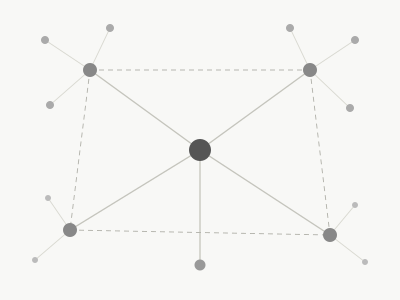
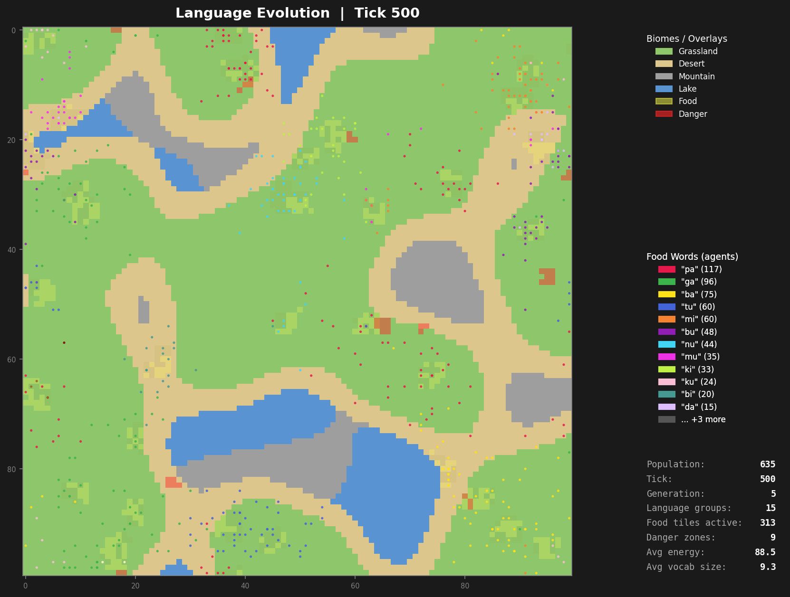
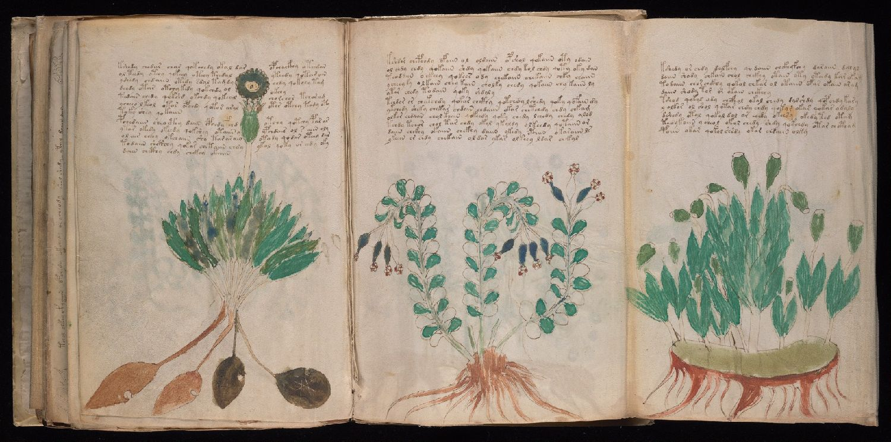
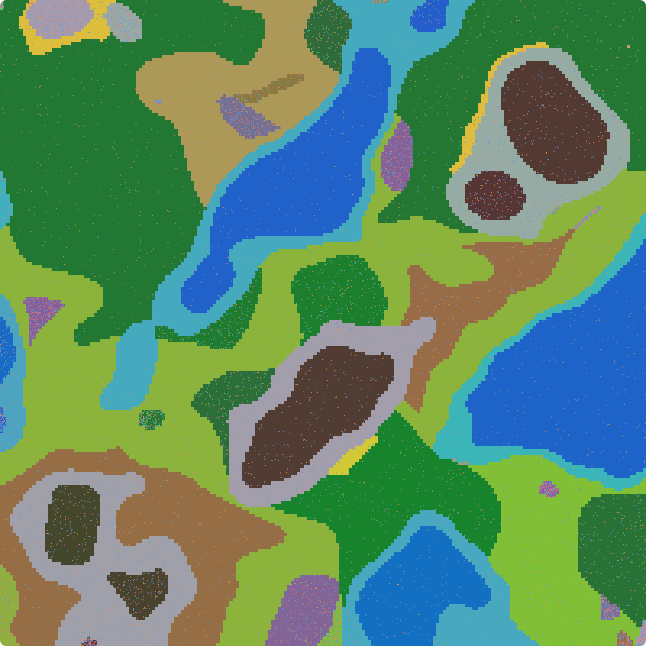

I graduated from Oxford in 2025 with a Master of Mathematics and Computer Science. I am currently a Research Engineer at LIG Defence & Aerospace, serving as part of my mandatory military service for the Korean government until July 2028. At work, I (1) currently collaborate with Palantir to develop AI solutions for unmanned military systems, and (2) maintain our internal framework, which provides core functionality across our company’s weapons systems.
My research interests live on the border between mathematics and computer science. I opt for a mathematical approach to CS problems, looking for mathematically ‘elegant’ representations of CS. Currently my interests split across two fields: knowledge representation (using maths and computation to find connections between separate topics) and genetic algorithms (using simple mathematical rules to grow elegant models and solutions).
Outside of that I try to be like any other guy. I like travelling and eating, with my most recent trips being in Morocco and Japan. I also spend a lot of free time building projects with Claude Code, and am currently working on creating an artificial language evolved through genetic algorithms and simulation.
.sillok: A Korean-Specific Lossless Text Encoding Format for Linguistically-Informed Compression and Long-Term Archival

Inspired by Don Swanson and literature-based discovery: research into how knowledge can be classified, and how unrelated questions might connect to answers already published somewhere else. Ongoing; details private.
Knowledge Formalisation · Automated Discovery · Solo
Agents start with no language and evolve one through selection pressure alone. Currently: a 5-vowel, 12-consonant sound system, rigid word-order grammar, an evidential system, graded number, and ~84% who-did-what accuracy. None of it was designed.
Genetic Algorithms · Computational Linguistics · Solo
Instead of asking what the Voynich Manuscript says, I asked what process produced it. Statistical fingerprinting that resists frequency-matching shows the text looks generated by a template, not enciphered, evidence against the cipher story that drives most attempts to read it.
Statistical Analysis · Computational Linguistics · Solo
1,025 species, biome world, traits derived from actual game data. No scripted interactions: food chains, population booms, and extinctions emerge from the numbers alone. Conway’s Game of Life × Lotka–Volterra dynamics.
Agent-Based Simulation · Ecological Modelling · Solo